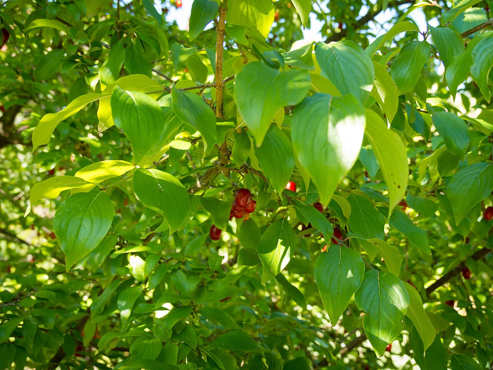

Керки

Вы по-грузински спросили, и хорошо спросили, я всё поняла. Но давайте дальше по-русски. Вам записывать легче, а мне, наверное, надо. Почему надо, я объясню, только не сразу. Садитесь к печке, на балконе уже холодно, а я там с утра нитки перевешивала.
Видели, что там висит? Это керки, сушёный кизил. Его нанизывают на нитку, как бусы, и сушат до самых холодов, пока ягода не станет как кожа. Рядом яблоки кружками, это на компот. У нас в Картли осенью так на каждом балконе: сушат кизил, сливу, щавель листьями, чтобы до весны хватило на похлёбки. Похлёбка называется шечаманди. Это постная еда, без мяса, а в пост и без масла. Варят её из кизила, из щавеля, из алычи, кто из чего. В других местах тоже варят, но спросите любого в Гори или в Карели, где лучше.
Кизил у меня в этом году с той стороны. Вы видели, когда подъезжали: столбы, проволока, зелёные щиты. Одни говорят «граница», другие «линия», по телевизору говорят «линия оккупации». Вы писатель, вам и выбирать слово. Я говорю «проволока». От неё до моего крыльца сейчас сто двенадцать шагов. Я каждое утро считаю.
Кизил посадил свёкор, на краю нижнего сада, у ручья. Это было ещё при Брежневе, мой Важа тогда в школу бегал. Яблони свёкор сажал на продажу, а кизил для дома. Говорил: яблоко кормит, а кизил лечит. Кизил растёт медленно, лет десять ждёшь, пока он начнёт родить, зато потом стоит над тобой всю жизнь. За ручьём начиналась дорога на Хелчуа, это осетинское село, до него пешком двадцать минут. Мы ходили туда в магазин, а осетины ходили к нам на свадьбы и на похороны, и мы к ним. Продавщица в Хелчуа записывала долги в тетрадку, там и грузины были, и осетины, и я тоже. Важа по воскресеньям гонял мяч с ребятами из Хелчуа на поле за нашим садом, до темноты, а потом все сидели у нас на балконе и спорили, кто кому забил.
Залина жила в Хелчуа. Мы с ней познакомились в роддоме, лежали в одной палате: у меня родилась Тамрико, у неё Алан, два дня разницы. По-грузински она говорит лучше моей невестки. Мы менялись рассадой: она мне свои помидоры, я ей перец. И ей нравился наш кизил. У них в Хелчуа кизил дикий, мелкий, а свёкор свой прививал, и ягода у нас крупная, тёмная, как вишня. Каждую осень Залина приходила, мы стелили под деревом брезент и трясли ветки, а потом сидели на балконе и нанизывали. Свекровь научила меня, а я её: игла сквозь середину, рядом с косточкой, и ягоду к ягоде не прижимать, иначе запреют.
Потом был август восьмого года. Что тогда было, вы знаете, вам по телевизору показывали, только не то, что видели мы. Мы уехали в Гори в первую же ночь, ничего не взяли: свёкор, свекровь, Тамрико с малышом на руках, Важа за рулём. А через несколько дней бежали и из Гори. Город бомбили, а потом по дороге пошли русские танки. Я видела их из окна автобуса: колонна, один за другим, и на броне сидели солдаты, молодые, и курили, как на прогулке. Три месяца мы жили в Тбилиси в детском саду, на детских кроватях. У Важи ноги свешивались до пола, и внук думал, что это игра.
Вернулись мы в октябре. Дом сгорел наполовину, верх, где спальни. Кто поджёг, не знаю, я не видела и говорить не буду. Сад тоже горел, нижние ряды стояли чёрные. А кизил стоял. С одной стороны листья обгорели, а с другой висели ягоды, перезрелые, почти чёрные, их никто не собрал. Свёкор подошёл, сорвал одну, съел и сказал: «Ну, значит, живём». Он после этого прожил ещё четыре года.
Залина пришла в ноябре, по дороге, тогда ещё ходили свободно. Принесла мешок муки и банку масла, стояла у калитки и плакала, а в дом не шла. Я её затащила силой. Про войну мы с ней не говорили ни разу, ни тогда, ни потом. Говорили про внуков, про помидоры, про цены на рынке в Гори. Думаю, так и надо было.
Яблони мы посадили заново. Дом отстроили за два года, с долгами. Яблоки сдавали перекупщикам, а куда они их везли, зависело от того, пускает нас в этом году Россия или не пускает. Два раза град выбил всё подчистую. Обычная жизнь, садоводческая.
В тринадцатом году на краю поля поставили щит: «Республика Южная Осетия». По-русски написано. Мальчишки бегали смотреть, а взрослые делали вид, что не замечают. Важа сказал, что это для фотографии. Футбольное поле к тому времени заросло бурьяном. Ребят из Хелчуа мы после войны не видели.
А седьмого августа девятнадцатого года, день в день в годовщину, я утром вышла кормить кур и услышала моторы. Внизу, у ручья, стояли зелёные машины, и солдаты вбивали столбы. Русские солдаты. Я в тот день сказала Важе «осетинский забор», и он меня поправил: какой осетинский, посмотри, на ком какая форма и на каком языке они ругаются. Осетины тут ничего не решали. Я это потом окончательно поняла, когда увидела Залину по ту сторону. Её эта проволока держит так же, как меня, только с другой стороны.
К вечеру столбы стояли через весь наш нижний сад. Ручей, пятнадцать рядов яблонь и кизил оказались по ту сторону. Соседям, у кого целые дома ушли за линию, сказали: три дня. На то, чтобы собрать урожай и вывезти, что увезёшь. Я пошла к солдатам. Сказала: там дерево моего свёкра, кизил, ему до сентября доспевать, дайте мне собрать, когда поспеет, один раз. Парень, рыжий, с обгоревшей на солнце шеей, посмотрел на меня и сказал: «Не положено». И отвернулся. Даже до конца не дослушал.
Вот почему я с вами по-русски. По-русски я говорила с удовольствием всю жизнь, в школе у меня была пятёрка, я на вечерах читала Пушкина наизусть. А теперь у меня этот язык начинается с двух вещей: «три дня» и «не положено». Каждый раз, когда я открываю рот по-русски, мне сначала надо их отодвинуть, как стул, который стоит посреди дороги. Понимаете? Для вас я его отодвигаю. Вы оттуда уехали, а они сюда пришли. Мне этого хватает, чтобы налить вам чаю. Для других не стану.
Важа месяц ходил к проволоке смотреть на свои яблони. Стоял, курил, считал, сколько яблок падает в траву. Те яблоки так и сгнили под деревьями, никому не достались. Через год он ходить перестал. Сейчас он дома, вон там, за стенкой, смотрит телевизор. К окну, которое выходит на ту сторону, он не садится. А я сажусь.
Проволоку потом двигали ещё, и не раз. Выходишь утром, а столб стоит на десять шагов ближе, чем вчера, и никто не слышал, когда его перенесли. Поэтому я и считаю шаги. Сейчас сто двенадцать. В девятнадцатом было сто сорок.
В сентябре того года кизил поспел. Я смотрела на него из окна: весь тёмный, ягоды падают в траву, дрозды клюют. А в конце сентября, вечером, когда уже темнело, я увидела под деревом женщину в платке. Она трясла ветки, и по тому, как она трясла, не сильно, а рывками, снизу вверх, я сразу поняла, кто это. Залина. Она стояла у себя, ей туда можно. Собрала в подол, сколько уместилось, и ушла.
А в ноябре, тоже в сумерках, она пришла к проволоке в том месте, где раньше через ручей лежали две доски, и позвала меня. Не по имени, а свистом, как мы в молодости звали друг друга через поле. Я вышла. Она просунула между рядами проволоки мешочек. В нём был керки, высушенный, нанизанный на нитку по-нашему: игла рядом с косточкой, ягода не касается ягоды. Она сказала: «Твой кизил. Я только посушила».
Я на неё кричала. Шёпотом кричала, вы понимаете, как это. Что её заберут и меня заберут. Что людей отсюда уводят на ту сторону за корову, которая перешла ручей, за грибы, держат там и отпускают за деньги. Это не слухи, у нас в округе так уже уводили. Залина стояла и молчала, а потом сказала: «Я же у себя стою. Это ты у проволоки стоишь». И ушла.
И так шесть осеней. В сентябре я вижу её под деревом, а в ноябре она свистит. Каждый год я ругаюсь и каждый год жду. Разговариваем мы через проволоку минуты две, не больше. Про внуков, про давление. Про то, что продавщица из Хелчуа умерла, тетрадка её, наверное, пропала, и наши долги нам теперь некому отдать.
В этом году свиста не было. Я ждала неделю. А позавчера к проволоке пришёл мальчишка, высокий, на неё похож. По-грузински говорит с акцентом, но говорит. Внук её, Аланов сын. Сказал, что бабушка больше не встаёт, ноги отказали, и что она велела ему без мешочка не возвращаться. Вот этот керки и висит у меня на балконе, досыхает. Я сунула ему через проволоку банку айвового варенья для неё и сказала, чтобы больше сам не ходил. Он засмеялся. Я в его годы тоже смеялась, когда старшие за меня боялись.
Теперь про похлёбку. Шечаманди постная, потому что её варили в пост, и кислая, потому что кизил кислый. Сахару кладут чуть-чуть, чтобы смягчить, а не чтобы было сладко. Свекровь говорила, что её едят, когда праздновать нечего, а есть всё равно надо. Вот, попробуйте. Это кизил моего свёкра, собранный на той стороне и высушенный руками Залины, а сварила я. Такая у нас теперь кухня, на три двора, и два из них за проволокой.
Немножко я вам отсыплю. Только не говорите мне, что это символ. Это не символ, это кизил, его варят. Записывайте, как свекровь говорила: керки горсти три, воды чтобы покрыла и ещё на палец, а остальное по вкусу и по посту.
Шечаманди из керки
На 4 порции.
Что нужно
керки (сушёный кизил) или свежий кизил — 500 г
вода — 500 мл для свежего кизила, для керки — до 1 л
лук — 1 средняя головка
растительное масло — 3 ст. л. (в пост) или сливочное — 50 г
чеснок — 2–3 зубчика
пшеничная мука — 20 г
сахар — 5–10 г
мята — несколько листьев
кинза — маленький пучок
соль — по вкусу
1. Керки промойте и залейте водой на ночь, чтобы ягода размякла. Свежий кизил достаточно промыть.
2. Вскипятите воду, положите кизил и варите 10 минут, керки — до 20 минут, пока мякоть не начнёт отставать от косточек.
3. Отвар слейте и сохраните. Кизил протрите через сито, косточки выбросьте.
4. Мелко нарежьте лук и обжарьте на масле до золотистого цвета. Добавьте кизиловое пюре, разведите отваром и дайте прокипеть 3 минуты.
5. Муку размешайте с небольшим количеством горячего отвара до гладкости, без комков. Влейте тонкой струйкой в кипящую похлёбку, не переставая помешивать: она должна чуть загустеть.
6. Добавьте растёртый чеснок, соль и сахар. Сахар только смягчает кислоту, похлёбка должна остаться кислой.
7. Снимите с огня, положите мелко нарезанные мяту и кинзу, накройте крышкой и дайте постоять 5–10 минут. Едят горячей, с хлебом.
Керки хранится до лета на нитке в сухом прохладном месте. Дольше его обычно не держат: в сентябре поспевает новый.
Тбилиси, ноябрь 2026